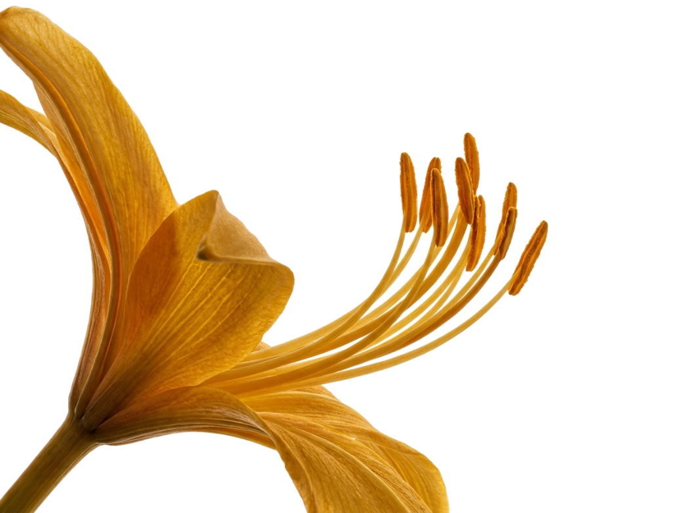
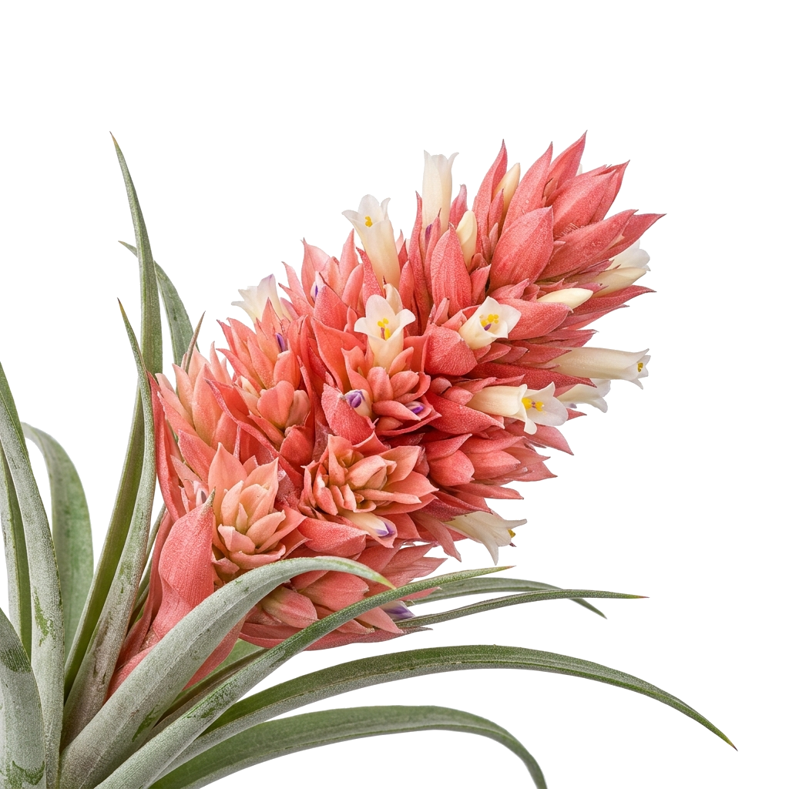

Simulasi sistem dinamik penularan demam berdarah dengue (DBD) antara manusia dan nyamuk Aedes, dikalibrasi dengan data kasus bulanan Filipina 2016 sampai 2020.
Lihat datanya ↘Total kasus nasional per bulan. Puncak muncul sekitar Juli sampai September, dan 2019 menjadi tahun wabah terbesar. Penurunan 2020 bertepatan dengan pandemi COVID-19.
Sumber: Kaggle, Dengue Cases in the Philippines (vincentgupo).
Manusia: rentan, terinfeksi, pulih. Nyamuk: rentan dan terinfeksi. Parameter dikalibrasi pada 2016 sampai 2018, lalu diuji pada 2019.

Atur seberapa besar populasi nyamuk ditekan (pengasapan, pemberantasan sarang nyamuk) dan kapan dimulai. Garis putus-putus adalah kondisi tanpa intervensi.